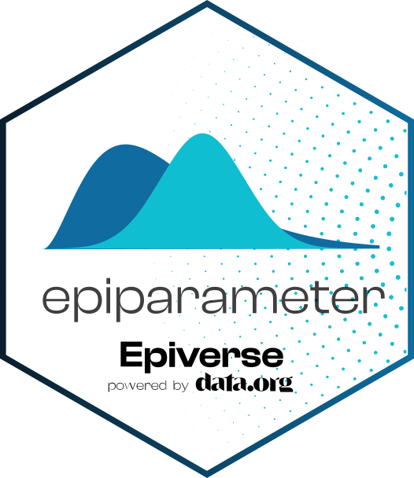

Epidemiological parameter data sources
Source:vignettes/data_sources.Rmd
data_sources.Rmdepiparameter provides classes and helper functions for
working with epidemiological parameters. It is not itself the canonical
store of those parameters. This vignette describes where parameters come
from, how to read each source into an <epiparameter>
object, and how to reach the data from languages other than R.
Where parameters come from
Three sources feed into <epiparameter> objects,
and they play different roles.
grEPI is the WHO Collaboratory Global Repository of Epidemiological Parameters. It is the long-term home for curated epidemiological parameters, is maintained collaboratively with the WHO, and is served over a public API.
{epireview} is the R package from the Pathogen Epidemiology Review Group (PERG), containing parameters extracted from the literature through systematic reviews.
{epiparameterDB} is the parameter library bundled with epiparameter, installed as a dependency and loaded by default. It exists so that the package has a small, stable, offline set of parameters to develop against: it is where new representations and bleeding-edge features are trialled, and where examples, tests and vignettes draw their data from. It also holds parameters needed by {epiparameter}, other Epiverse-TRACE packages or tutorials that are not available from grEPI or {epireview}. It is deliberately not intended to grow into a comprehensive repository – that role belongs to grEPI and {epireview}.
For the contents of the bundled library, see the Current database vignette, which lists every entry with its citation.
Reading from grEPI
epiparameter_db() queries the grEPI API directly when
db = "grEPI".
# query grEPI over the network
ep <- epiparameter_db(
db = "grEPI",
disease = "Ebola disease",
epi_name = "incubation period"
)The disease and epi_name arguments filter
the request, and each returned record is converted into an
<epiparameter> object. These chunks are not evaluated
when the vignette is built, as they require network access.
Reading from {epireview}
Parameter tables from {epireview} are converted with
as_epiparameter(). The Using {epireview} with
{epiparameter} article works through this in detail.
# a parameter table from {epireview}
params <- epireview::load_epidata("marburg")$params
ep <- as_epiparameter(params[1, ])Reading the bundled library
With no db argument, epiparameter_db()
reads from {epiparameterDB}.
ep <- epiparameter_db(
disease = "Ebola Virus Disease",
epi_name = "incubation period",
single_epiparameter = TRUE
)
#> Using WHO Ebola Response Team, Agua-Agum J, Ariyarajah A, Aylward B, Blake I,
#> Brennan R, Cori A, Donnelly C, Dorigatti I, Dye C, Eckmanns T, Ferguson
#> N, Formenty P, Fraser C, Garcia E, Garske T, Hinsley W, Holmes D,
#> Hugonnet S, Iyengar S, Jombart T, Krishnan R, Meijers S, Mills H,
#> Mohamed Y, Nedjati-Gilani G, Newton E, Nouvellet P, Pelletier L,
#> Perkins D, Riley S, Sagrado M, Schnitzler J, Schumacher D, Shah A, Van
#> Kerkhove M, Varsaneux O, Kannangarage N (2015). "West African Ebola
#> Epidemic after One Year — Slowing but Not Yet under Control." _The New
#> England Journal of Medicine_. doi:10.1056/NEJMc1414992
#> <https://doi.org/10.1056/NEJMc1414992>..
#> To retrieve the citation use the 'get_citation' function
ep
#> Disease: Ebola Virus Disease
#> Pathogen: Ebola Virus
#> Epi Parameter: incubation period
#> Study: WHO Ebola Response Team, Agua-Agum J, Ariyarajah A, Aylward B, Blake I,
#> Brennan R, Cori A, Donnelly C, Dorigatti I, Dye C, Eckmanns T, Ferguson
#> N, Formenty P, Fraser C, Garcia E, Garske T, Hinsley W, Holmes D,
#> Hugonnet S, Iyengar S, Jombart T, Krishnan R, Meijers S, Mills H,
#> Mohamed Y, Nedjati-Gilani G, Newton E, Nouvellet P, Pelletier L,
#> Perkins D, Riley S, Sagrado M, Schnitzler J, Schumacher D, Shah A, Van
#> Kerkhove M, Varsaneux O, Kannangarage N (2015). "West African Ebola
#> Epidemic after One Year — Slowing but Not Yet under Control." _The New
#> England Journal of Medicine_. doi:10.1056/NEJMc1414992
#> <https://doi.org/10.1056/NEJMc1414992>.
#> Distribution: gamma (days)
#> Parameters:
#> shape: 1.578
#> scale: 6.528Entries in {epiparameterDB} exactly reflect the literature. Information not stated in the source paper is not imputed, either from prior knowledge – the vector of a disease may be well known but unstated – or by calculating from other reported values. This is why a field is sometimes empty for an entry even though the information is generally known: recording only what the paper reports keeps the provenance of every value unambiguous. Values that follow deterministically from what was reported, such as the shape and scale of a gamma distribution given a mean and standard deviation, are reconstructed when the entry is read into R rather than being stored.
This convention applies to {epiparameterDB}. grEPI and {epireview} set their own criteria for what an entry may contain, so a field left empty here is not necessarily empty there.
Contributing parameters
Before contributing, it is worth deciding which source an entry belongs in. The bundled library is a development set, so parameters intended for long-term curation are better contributed to grEPI or {epireview} directly. Entries that support package development – exercising a distribution family, a metadata field, or a feature under trial – belong in {epiparameterDB}.
Entries are added by a pull request to {epiparameterDB}, editing
inst/extdata/parameters.json. Each entry is a single JSON
object, for example the incubation period of influenza A (H1N1):
{
"disease": "Influenza",
"pathogen": "Influenza-A-H1N1",
"epi_name": "incubation period",
"probability_distribution": {
"prob_distribution": "weibull",
"parameters": {
"shape": 1.74,
"scale": 1.83
},
"offset": 0
},
"summary_statistics": {
"quantile_values": [3.18],
"quantile_names": ["95"],
"median": 1.43,
"median_ci_limits": [1.21, 1.65],
"median_ci": 95
},
"citation": {
"author": [
{ "given": "Hiroshi", "family": "Nishiura" },
{ "given": "Hisashi", "family": "Inaba" }
],
"title": "Estimation of the incubation period of influenza A (H1N1-2009) among imported cases: addressing censoring using outbreak data at the origin of importation",
"journal": "Journal of Theoretical Biology",
"year": 2011,
"pmid": 21168422,
"doi": "10.1016/j.jtbi.2010.12.017"
},
"metadata": {
"units": "days",
"sample_size": 72,
"region": "Japan",
"transmission_mode": "natural_unknown",
"extrinsic": false,
"inference_method": "mle"
},
"method_assessment": {
"truncation": null,
"discretised": false,
"censored": true,
"right_truncated": false,
"phase_bias_adjusted": true
},
"notes": "Gamma and weibull distributions had equally good fit to the data. This entry is the weibull distribution. Weibull, exponential"
}Values should be recorded as reported in the source, following the convention described above: nothing imputed, nothing derived by hand.
data_dictionary.json is a JSON Schema describing every
field, its type and its accepted values, and is the authoritative
reference for what an entry may contain. Every entry is validated
against it automatically by a GitHub Actions workflow when a pull
request is opened, so a malformed entry fails before review. The Epiverse-TRACE
contributing guide covers the mechanics of opening a pull
request.
Using the data from other languages
The bundled library is stored as JSON, so it can be read without R. Two files are shipped in {epiparameterDB}:
-
parameters.json– the parameter library -
data_dictionary.json– a description of each field
From R, system.file() gives their location on disk:
system.file("extdata", "parameters.json", package = "epiparameterDB")
system.file("extdata", "data_dictionary.json", package = "epiparameterDB")Without R, both files can be read straight from the {epiparameterDB} repository. In Python:
import json
import urllib.request
url = ("https://raw.githubusercontent.com/epiverse-trace/"
"epiparameterDB/main/inst/extdata/parameters.json")
with urllib.request.urlopen(url) as f:
db = json.load(f)
ebola = [
e for e in db
if e["disease"] == "Ebola Virus Disease"
and e["epi_name"] == "incubation period"
]
for e in ebola:
print(e["probability_distribution"]["prob_distribution"],
e["summary_statistics"])
#> lnorm {'mean': 12.7, 'sd': 4.31}
#> gamma {'mean': 10.3, ...}And in Julia:
using JSON, Downloads
url = "https://raw.githubusercontent.com/epiverse-trace/" *
"epiparameterDB/main/inst/extdata/parameters.json"
db = JSON.parsefile(Downloads.download(url))
ebola = filter(
e -> e["disease"] == "Ebola Virus Disease" &&
e["epi_name"] == "incubation period",
db
)
for e in ebola
println(e["probability_distribution"]["prob_distribution"])
end
#> lnorm
#> gammaEach entry is an object with disease,
pathogen, epi_name,
probability_distribution, summary_statistics,
citation, metadata,
method_assessment and notes fields.
data_dictionary.json documents what each of these
contains.
grEPI can likewise be queried from any language, as it returns JSON over HTTP. Its API documentation describes the available endpoints and query parameters.
Project history
epiparameter did not always work this way.
The package began as a library of epidemiological parameters together with the functions to use them. The intention was that it would act as a ‘living systematic review’ (Elliott et al. 2014): parameters would be identified through structured literature searches, extracted, quality assessed, and added to a library that grew over time. That process followed established systematic review guidance, drawing on the Cochrane Handbook (Higgins et al. 2019) and PRISMA (Page et al. 2021), and was documented in a data collation and synthesis protocol that this vignette replaces. Community contributions were collected through open spreadsheets and reviewed by the package maintainers; that route has since been retired in favour of pull requests, which carry the same automated validation as any other entry.
Two things changed that plan. First, in v0.4.0 the library was separated from the code and moved into its own package, {epiparameterDB}. This let the data be versioned and released independently of the functions that read it, and it let each be licensed appropriately. An R package cannot be dual licensed, so while the code and data lived together the parameters could not be released under CC0. {epiparameterDB} is now licensed CC0 and {epiparameter} solely MIT. Second, and more importantly, the WHO Collaboratory began developing grEPI as a comprehensive and sustainably maintained repository of epidemiological parameters, developed in collaboration with Epiverse-TRACE. Alongside it, {epireview} was established for parameters extracted through systematic reviews by PERG.
Maintaining a third parallel library would duplicate that effort. So epiparameter has narrowed to what it does well: providing the classes, methods and conversions for working with epidemiological parameters, and interoperating with the databases that curate them. The bundled library remains, but as a development and experimentation set rather than as a repository intended to be comprehensive.